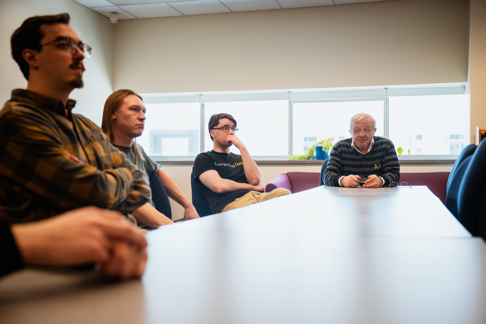

Microarchitecture
Fetch bandwidth, branch and memory-dependence prediction, misprediction recovery, and non-blocking memory hierarchies for high single-thread performance.

Photo 1 of 7
SCIA /ˈskiː.ə/ — pronounced “skee-uh”; Latin for knowledge.
SCIA is the computer architecture research group of Prof. Soner Önder in the Department of Computer Science at Michigan Technological University.
We study how processors and compilers can work together to make programs run faster and more efficiently, with a particular focus on single-thread performance. Much of our work rethinks the boundary between hardware and software: executable single-assignment program representations, demand-driven execution of imperative programs, statically controlled multi-lane execution, and vectorization of the instruction space to turn hard-to-predict branches into data dependences.
We also build the infrastructure that makes this research possible — FAST, an architecture-description-language-driven simulator generator, and a shared in-house superscalar simulation framework that our students extend and use every day.
Our work is supported by the National Science Foundation and carried out in close collaboration with Prof. David Whalley's group at Florida State University and with the Computer Architecture Laboratory at NTNU in Trondheim, Norway, where our students have spent research summers through an NSF IRES program.
Fetch bandwidth, branch and memory-dependence prediction, misprediction recovery, and non-blocking memory hierarchies for high single-thread performance.
Executable single-assignment program representations (FGSA) that serve both the optimizing compiler and the machine's instruction set.
Demand-driven execution, statically controlled asynchronous lanes (SCALE), and vectorization of the instruction space (VIS).
FAST, an ADL-driven simulator generator with checkpointing, and a shared superscalar simulation framework used across our projects.